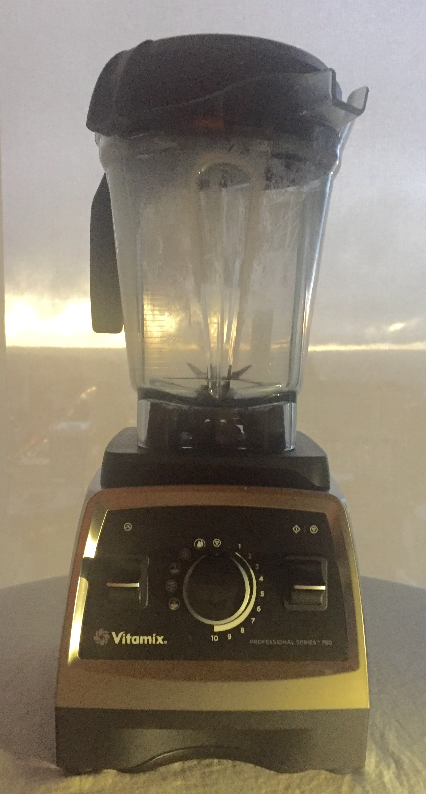
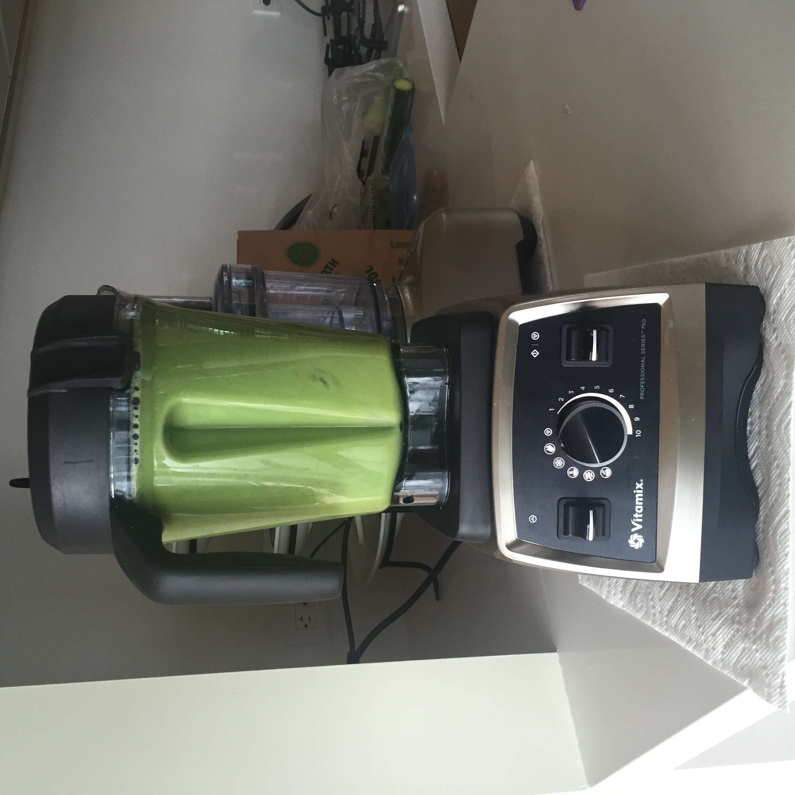

Before You Start
The health benefits of smoothies cannot be under-estimated. Alternating these three recipes on a daily basis will improve the function of your internal organs and body systems. The antioxidants, vitamins, minerals and other nutrients in these smoothies will protect your body from disease.
And they also taste great
The quality of your smoothie is affected by your choice of ingredients and blender:
Blender
While it is possible to use small personal blenders (Magic Bullet, etc...) for these recipes, the best results are obtained when using a Vitamix. Yes, Vitamix blenders are expensive, but if you start drinking smoothies every day, you won't regret your investment.

Ingredients
Use high quality, organic fruits, vegetables and herbs. To maximize nutritional benefit, use unpeeled produce, except where indicated.
Consider peeling non-organic ingredients.
Green
|
Red
|
Orange
|
- 1/2 cucumber
- 2 sticks celery
- 1/2 bulb fennel
- 1/2 lemon (seeded)
- 1 thumb ginger
- 3 leaves kale
- 1 green apple (seeded)
|
- 1/2 cucumber
- 2 sticks celery
- 1 red beet (medium)
- 1/2 lemon (seeded)
- 1/2 bunch italian parsley
- 1/2 bunch cilantro
- 1 green apple (seeded)
- dash (or more) cayenne pepper
|
- 1/2 cucumber
- 2 sticks celery
- 8 carrots (medium)
- 1/2 lemon (seeded)
- 1 orange (seeded)
- 1 thumb ginger
- 1 thumb tumeric
- 1 papaya (peeled and seeded)
- 1/4 (or more) habanero pepper
|
Directions
Slice the ingredients into chunks that can be easily inserted into the blender
Leave the ingredients unpeeled,even the citrus fruit

The chunks can be 1"-3" in size
Load the blender with the sliced ingredients
Load the lighter ingredients at the top

...and the denser ingredients at the bottom
Fill the blender with water to about the 2/3s mark
Adjust the water level to your taste

the less volume, the denser the smoothie
Blend until smooth, 1-2 minutes
You may need to tamp the ingredients to make sure they are incorporated in the smoothie

Makes 1-2 litres, depending on the amount of added water